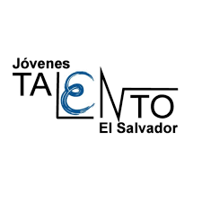

Resumen

Mi nombre es Christopher Marroquin, tengo 19 años. Soy estudiante de Ingeniería de Software y Negocios Digitales en la ESEN y fundador del Competitive Coding Club (C3). Me enfoco en crear comunidad y oportunidades de crecimiento en programación competitiva y educación tecnológica. He organizado la Copa Salvadoreña de Programación e iniciativas como la Software Week.
Historia
Nací el 23 de septiembre de 2005 en San Salvador, dentro de una familia cercana y unida. Mis padres, José Israel Marroquín, ingeniero químico, y María de los Ángeles Figueroa, ingeniera industrial, me brindaron desde el inicio un entorno lleno de apoyo. Crecí rodeado también de mis cuatro abuelos, con quienes compartí una infancia llena de afecto y tradiciones. Recuerdo en particular las visitas de cada sábado a casa de mis abuelos paternos, que se convirtieron en un espacio para convivir y aprender de ellos. En 2012 nació mi hermana, un acontecimiento que marcó nuestra vida familiar y me enseñó a asumir nuevas responsabilidades.
Desde pequeño inicié mis estudios en un kínder cercano, al que asistí con apenas dos años y medio de edad. Más adelante, ingresé al Liceo Salvadoreño, institución en la que cursé toda mi educación básica y media, desde primer grado hasta graduarme en la promoción 2023. El Liceo se convirtió en uno de los lugares más significativos de mi vida, no solo por la formación académica que recibí, sino también porque allí conocí a varios de mis mejores amigos, con quienes conservo un fuerte lazo hasta hoy. Fue en esta etapa donde empecé a mostrar mi interés y talento en áreas como la matemática, lo cual abrió nuevas oportunidades de aprendizaje y crecimiento personal.
Ese interés por la matemática me llevó, en 2018, a integrarme al Programa Jóvenes Talento, donde tuve la oportunidad de desarrollarme en matemáticas y ciencias. En 2020 entre al Grupo Olímpico de Informática dentro del mismo programa, etapa que coincidió con la pandemia. Fueron años complicados, pero también de mucha resiliencia y aprendizaje. De regreso a la vida académica, en mi promoción 2023 participé activamente como líder en equipos de tecnología, experiencia que ayudó a mi liderazgo e interés por la tecnología.
En 2022 me uní a EJE Ricaldone, una experiencia fundamental que me permitió crecer a través de actividades espirituales, formaciones, campamentos y retiros. Allí encontré un espacio que complementó mi formación académica con una dimensión religiosa. Posteriormente, en 2024, inicié mis estudios universitarios en la Escuela Superior de Economía y Negocios (ESEN), en la carrera de Ingeniería de Software y Negocios Digitales. Este nuevo camino ha transformado mi mentalidad, mis metas y mis objetivos. Dentro de la ESEN fundé el Competitive Coding Club (C3), que nació con la idea de compartir conocimientos en programación y lógica, así como desarrollar la capacidad de resolución de problemas en la comunidad. Desde aquí, hemos impulsado proyectos como la Copa Salvadoreña de Programación, buscando crear más oportunidades para el talento tecnológico en El Salvador.
Formación Academica
-
Liceo Salvadoreño
El Liceo es de los lugares mas importantes para mi vida y la persona que soy. Allí adquirí una sólida base académica y, sobre todo, construí amistades y experiencias que me acompañan hasta hoy.

-
Jóvenes Talento
En este programa, fortalecí mis conocimientos en matemáticas y ciencias. A partir de 2020, me especialicé en informática, desarrollando habilidades en programación, lógica y resolución de problemas. Esta experiencia me abrió las puertas a nuevas competencias y oportunidades.
 -
ESEN
En la carrera de Ingeniería de Software y Negocios Digitales, he crecido, aprendido y cambiado mi forma de pensar y mis metas, brindándome un entorno de excelencia académica, liderazgo y propósito.

Logros
-
Copa Salvadoreña de Programación
Como primer evento del C3, reunimos a más de 130 estudiantes de todo el país en una competencia de alto nivel en programación competitiva. Fue un hito que marcó el inicio de nuestra visión.
-
Primer lugar en CIES
Junto al equipo de C3, obtuvimos el primer lugar en el Congreso Internacional de Emprendedores (CIES), demostrando nuestra capacidad de innovación y liderazgo en eventos tecnológicos y educativos.
-
Mención honorífica en la Olimpiada Iberoamericana de Informática
Reconocimiento obtenido a nivel internacional por mi participación en la OII, un logro que refleja el esfuerzo y dedicación por la programación.
-
Beca al mejor proceso de admisión en ESEN
En mi primer año de universidad, se me otorgó la beca al proceso de admisión destacado.
Expectativas
Mi expectativa es seguir formándome académicamente y potenciando mis capacidades en programación, liderazgo y emprendimiento. Aspiro a consolidar el trabajo del C3 con nuevos eventos y proyectos que inspiren a más estudiantes. Al mismo tiempo, busco mejorar de manera integral, trabajando en mis habilidades personales y profesionales, para contribuir al desarrollo del talento tecnológico en El Salvador y en la región.